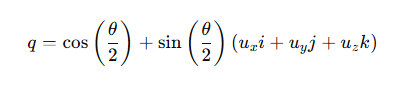

Загрузить проект С++ здесь ПРИМЕР КОДА 1 - в этом примере кватернион поворачивается на 90 градусов вокруг вектора оси Z затем преобразуется в матрицу поворота
Загрузить проект С++ здесь ПРИМЕР КОДА 2 - в этом примере кватернион поворачивается на 90 градусов вокруг произвольной вектора оси
Загрузить проект С++ здесь ПРИМЕР КОДА 3 - в этом примере кватернион поворачивается на 90 градусов вокруг вектора оси Y
Реализация в коде С++.
В примере ниже кватернион поворачивается на 90 градусов вокруг вектора оси Z затем преобразуется в матрицу поворота
#include <math.h>
#define PI 3.1415926535897932384626433L
struct Quaternion
{
double w, x, y, z;
Quaternion operator*(const Quaternion& q) const
{
Quaternion q_out = {
w * q.w - x * q.x - y * q.y - z * q.z,
w * q.x + x * q.w + y * q.z - z * q.y,
w * q.y - x * q.z + y * q.w + z * q.x,
w * q.z + x * q.y - y * q.x + z * q.w
};
return q_out;
}
Quaternion conjugate() const
{
Quaternion q_out = {w, -x, -y, -z};
return q_out;
}
};
// Функция для создания матрицы вращения 4x4 из кватерниона
void createRotationMatrix4x4(const Quaternion& q, double matrix[4][4]) {
double xx = q.x * q.x, yy = q.y * q.y, zz = q.z * q.z;
double xy = q.x * q.y, xz = q.x * q.z, yz = q.y * q.z;
double wx = q.w * q.x, wy = q.w * q.y, wz = q.w * q.z;
matrix[0][0] = 1.0 - 2.0 * (yy + zz);
matrix[0][1] = 2.0 * (xy - wz);
matrix[0][2] = 2.0 * (xz + wy);
matrix[0][3] = 0.0;
matrix[1][0] = 2.0 * (xy + wz);
matrix[1][1] = 1.0 - 2.0 * (xx + zz);
matrix[1][2] = 2.0 * (yz - wx);
matrix[1][3] = 0.0;
matrix[2][0] = 2.0 * (xz - wy);
matrix[2][1] = 2.0 * (yz + wx);
matrix[2][2] = 1.0 - 2.0 * (xx + yy);
matrix[2][3] = 0.0;
matrix[3][0] = 0.0;
matrix[3][1] = 0.0;
matrix[3][2] = 0.0;
matrix[3][3] = 1.0;
}
int main()
{
// Угол и ось вращения
double theta = PI / 2; // 90 градусов
Quaternion q = {cos(theta / 2), 0, 0, sin(theta / 2)};
Quaternion p = {0, 1, 0, 0}; // Вектор (1, 0, 0)
Quaternion q_inv = q.conjugate();
// Вращение: p' = q * p * q^-1
Quaternion p_rotated = q * p * q_inv;
// Создание матрицы вращения 4x4
double rotationMatrix[4][4];
createRotationMatrix4x4(q, rotationMatrix);
return 0;
}
Кватернион — это математическая структура, состоит из четырех компонентов.
struct quaternion
{
float w, x, y, z;
};
Как видим подобно вектору кватернион состоит из компонент x,y,z и есть четвертая компонента w.
Основные операции с кватернионами:
Применение кватернионов.
Для вращения объекта с помощью кватерниона, сначала по определенной формуле надо создать кватерниона вращения, далее из кватерниона вращения создать матрицу вращения, а потом можно вершины модели умножать на эту матрицу вращения.
Для вращения объекта в трёхмерном пространстве при помощи кватернионов используется формула:
p1 = qpq-1
p1 - кватернион, представляющий повернутую точку
q — единичный кватернион, задающий вращение
p — вектор, представляющий точку, которую нужно повернуть, записывается как чисто мнимый кватернион: p=0+xi+yj+zk
q−1 - обратный кватернион для q
Кватернион вращения создается по следующий формуле, угол вращения Phi и ось вращения ux, uy, uz:
